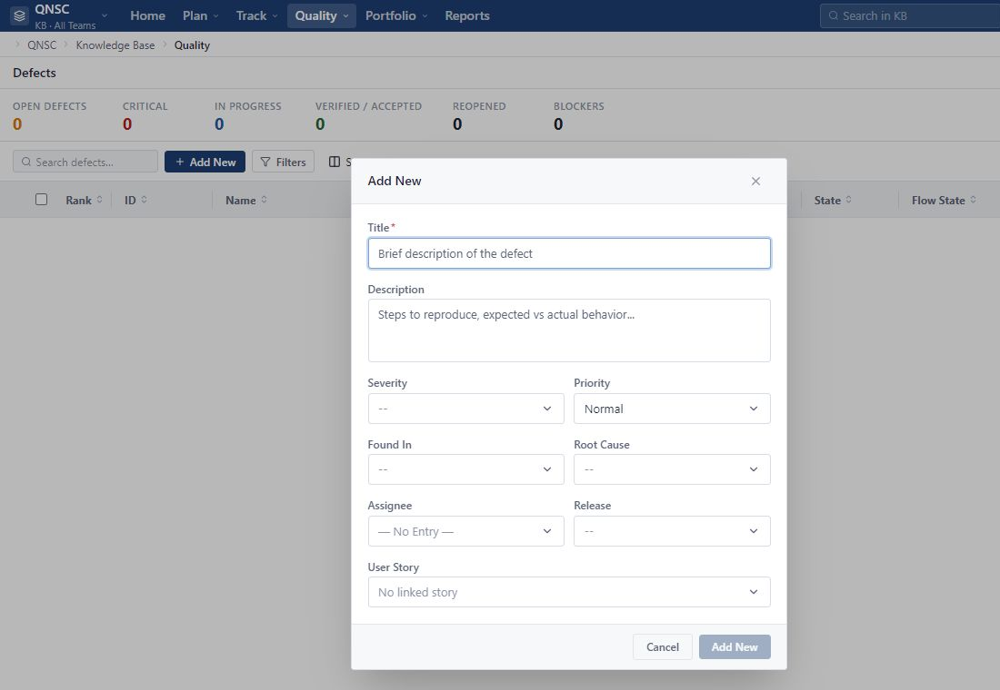

Quality không có Defect
Kiểm tra Project, Team, Search và Filters. Nếu màn hình báo No defects logged yet sau khi bỏ lọc, phạm vi hiện tại chưa có Defect.
Quality > Defects tập trung toàn bộ Defect của phạm vi đang chọn. Track > Team Status nhóm các Task theo người phụ trách để người quản lý nhìn khối lượng và tiến độ của Team trong một Iteration.
Dùng màn hình này khi cần xem riêng các lỗi thay vì lọc Defect trong Backlog.
Defect hiển thị theo phạm vi đang chọn trên thanh đầu trang. Chọn đúng Project và Team trước khi đọc số liệu hoặc tạo mới.
Màn hình có vùng tổng quan và danh sách Defect. Khi phạm vi chưa có lỗi, hệ thống hiển thị No defects logged yet; đây không phải lỗi tải dữ liệu.
Danh sách gồm Rank, ID, Name, User Story, Severity, Priority, State, Flow State, Fixed In Build, Iteration, Submitted By và Owner.
Dùng Search defects, Filters và Show Fields. Phân trang ở cuối bảng chỉ thay đổi số dòng đang xem.
Defect trong Quality và Defect trong Backlog là cùng một Work Item. Thay đổi ở một màn hình phải được phản ánh ở màn hình còn lại; không tạo bản sao chỉ để theo dõi trong Quality.
Dùng Add New khi phát hiện lỗi và muốn ghi nhận trực tiếp trong màn hình chuyên trách.

Form tạo nhanh mở ngay trên danh sách Quality. Kiểm tra lại phạm vi ở thanh đầu trang trước khi nhập.
Title nêu ngắn gọn biểu hiện lỗi. Description nên ghi điều kiện, các bước tái hiện, kết quả mong đợi và kết quả thực tế.
Chọn Severity, Priority, Assignee và các thông tin liên quan nếu đã biết. Có thể để trống trường chưa xác định và bổ sung sau.
User Story là tùy chọn. Chỉ liên kết Story đang hoạt động trong cùng Project; không chọn một Story chỉ vì tên gần giống.
Sau khi tạo, mở Defect Detail để kiểm tra State, Flow State, Team, Iteration và các trường cần bổ sung.
Kết quả mong đợi: Defect mới xuất hiện trong Quality và Backlog với cùng ID. Nếu cần tạo chi tiết hơn ngay từ đầu, bạn cũng có thể tạo Defect từ Backlog theo hướng dẫn ở Phần 03.
Mỗi trường trả lời một câu hỏi khác nhau. Không dùng Priority thay cho Severity.
Severity mô tả mức độ ảnh hưởng của lỗi đến sản phẩm: None, Critical, Major Problem, Minor Problem hoặc Trivial. Chọn theo hậu quả thực tế, ví dụ mất dữ liệu hoặc chặn luồng chính nghiêm trọng hơn một lỗi hiển thị nhỏ.
Priority mô tả thứ tự cần xử lý: None, Urgent, High, Normal hoặc Low. Một lỗi Severity cao có thể chưa phải ưu tiên đầu tiên nếu chưa ảnh hưởng phạm vi đang giao; quyết định Priority cần dựa trên kế hoạch và rủi ro hiện tại.
User Story cho biết lỗi liên quan trực tiếp đến nhu cầu nào. Liên kết này không bắt buộc và chỉ nhận Story trong cùng Project. Fixed In Build là thông tin nhập tay về build hoặc phiên bản có bản sửa; chỉ điền khi đã xác định được build đó.
Defect có State riêng để theo dõi quá trình xử lý lỗi, đồng thời vẫn có Flow State của Work Item.
Lỗi vừa được ghi nhận và đang chờ xem xét.
Lỗi đã được chấp nhận để phân tích hoặc xử lý.
Bản sửa đã có và đang chờ xác nhận kết quả.
Bản sửa đã được xác nhận và lỗi được đóng.
Dùng khi quyết định không xử lý lỗi và cần giữ lại bản ghi cùng lý do.
Flow State dùng các giá trị Idea, Defined, In-Progress, Completed, Accepted và Release. Flow State phục vụ luồng công việc; Defect State phục vụ vòng đời lỗi. Hai trường độc lập nên đổi Flow State không tự đổi Defect State.
Closed và Closed Declined dùng khi cần giữ Defect làm lịch sử. Xóa Defect là thao tác khác, cần đúng quyền và bước xác nhận. Hướng dẫn này không yêu cầu mở lại Defect đã Closed hoặc Closed Declined vì quy tắc reopen chưa nằm trong phạm vi đã xác nhận.
Dùng Track > Team Status để xem Task được phân cho từng thành viên và tổng số giờ trong một Iteration.
Team Status lấy thành viên từ Team đang chọn. All Teams là phạm vi xem tổng hợp, không phải một Team để giao Task.
Màn hình chỉ dành cho Workspace Admin và Project Admin theo quyền hiện tại. Editor quản lý Task từ tab Tasks của Work Item và không vào Team Status.
Dùng nút trước, danh sách Iteration và nút sau ở đầu trang. Đổi Iteration sẽ thay toàn bộ nhóm thành viên, Task và số tổng.
Totals cộng Capacity, Estimate, To Do và Actuals của toàn bộ phạm vi Iteration, không chỉ các dòng trên trang phân trang hiện tại.
Mỗi nhóm hiển thị tên, số Task, phần trăm tiến độ và số giờ. Mở nhóm để xem Task ID, Task Name, Work Product, Release, State và Owner.
Team Status có Filters và phân trang; không có ô Search Tasks hoặc Show Fields riêng. Task không có Owner được nhóm dưới Unassigned với Capacity bằng 0 giờ.
Team Status hiển thị Task, còn tiến độ tổng hợp được phản ánh về User Story hoặc Defect cha.
Mỗi Task trong Team Status thuộc đúng một User Story hoặc Defect được ghi ở cột Work Product. Task kế thừa Iteration từ Work Item cha và được tính đúng một lần trong phạm vi đã chọn.
Khi một Task chuyển sang Completed, hệ thống cập nhật lại tiến độ của Work Item cha. Nếu vẫn còn Task chưa Completed, item cha chưa tự Completed. Khi tất cả Task con đã Completed, item cha tự chuyển sang Completed.
Nếu mở lại một Task về Defined hoặc In-Progress, item cha tự chuyển về In-Progress và tính lại tiến độ. Estimate, To Do và Actual của Task vẫn giữ nguyên; đổi State không tự sửa các trường giờ.
Kiểm tra phạm vi và nguồn dữ liệu trước khi tạo lại Defect hoặc Task.
Kiểm tra Project, Team, Search và Filters. Nếu màn hình báo No defects logged yet sau khi bỏ lọc, phạm vi hiện tại chưa có Defect.
Đối chiếu cùng Project/Team và bỏ bộ lọc. Hai màn hình dùng cùng dữ liệu Defect nên không tạo item thay thế.
Story phải đang hoạt động, cùng Project và nằm trong phạm vi bạn được truy cập. Có thể để trống liên kết nếu lỗi không thuộc một Story cụ thể.
Editor không có quyền vào màn hình này. Dùng tab Tasks của Work Item hoặc liên hệ Project Admin khi cần xem tổng hợp Team.
Danh sách chỉ lấy active member của Team đang chọn. Người ngoài Team không được tạo thành một nhóm thành viên mới.
Đây là hành vi đúng. Cập nhật Estimate, To Do và Actual trực tiếp trên Task; State chỉ phản ánh giai đoạn thực hiện.